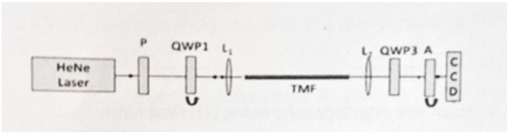
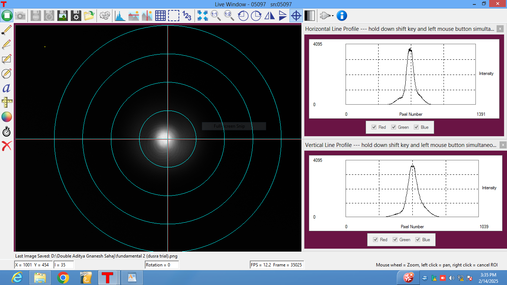

Aim
To study the output modes of a single-mode fiber with the change of input polarization.
Apparatus
The equipment and materials required for the experiment are:
- He-Ne Laser source
- Mirrors
- Beam splitters
- Single-mode fiber (SMF)
- Wave plates (Quarter-Wave Plates - QWP1, QWP3)
- Polarizer (P)
- Objective lens (L1, L2)
- Analyzer (A)
- Charge-Coupled Device (CCD)
Theory
In optical fibers, modes represent stable field distributions of light that propagate without changing shape. The number of modes depends on the fiber's core diameter, numerical aperture (NA), and operating wavelength. Fibers are classified as single-mode (SMF) or multimode (MMF). SMFs support only the fundamental mode (LP01), which has a Gaussian-like intensity distribution and is used in long-distance communication due to minimal dispersion. MMFs support multiple modes, leading to modal dispersion, which limits their use to short distances.
The number of supported modes is determined by the V-number: V = 2πaNA / λ, where a is the core radius and λ is the wavelength. If V < 2.405, the fiber operates in single-mode; otherwise, it supports multiple modes. Modes are categorized as Linearly Polarized (LP) modes in weakly guiding fibers, while Hybrid modes (HE, EH) are used for strong guiding fibers. In multimode fibers, different modes travel at different speeds, causing intermodal dispersion, while polarization mode dispersion (PMD) can affect signal integrity in birefringent fibers. These mode characteristics play a crucial role in fiber-optic communications, sensors, and imaging applications.
Experimental Setup
The setup consists of a He-Ne laser that generates a coherent light beam. The beam first passes through a polarizer (P) and a quarter-wave plate (QWP1) to adjust its polarization state. The light is then focused using a lens (L1) into a single-mode fiber (SMF) for transmission. At the output of the fiber, a second lens (L2) collimates the emerging beam before it passes through another quarter-wave plate (QWP3) and an analyzer (A). Finally, the processed light is captured by a CCD camera, allowing observation of mode variations.

Figure 1: Experimental Setup: Modes in SMF
Procedure
Step-by-step instructions for the experiment:
- Align the He-Ne laser to ensure a stable beam path.
- Adjust the polarizer (P) and QWP1 to set the desired input polarization.
- Focus the laser beam into the single-mode fiber using lens L1.
- Observe the output beam through the CCD camera while varying the input polarization.
- Use QWP3 and analyzer (A) to further analyze the polarization state at the output.
- Record and analyze the mode structure for different input polarization states.
Observations
The output mode remains nearly Gaussian for ideal single-mode fiber propagation.
Changing the input polarization leads to variations in intensity distribution and minor changes in mode structure.
The analyzer and second quarter-wave plate allow for further control and visualization of polarization-dependent effects.

Figure 2: Fundamental Mode through SMF

Figure 4: Distorted beam after readjusting SMF
Conclusion
This experiment demonstrates that the output mode of a single-mode fiber is influenced by the polarization of the input light. By adjusting the input polarization using wave plates and a polarizer, we can observe variations in the output mode structure.